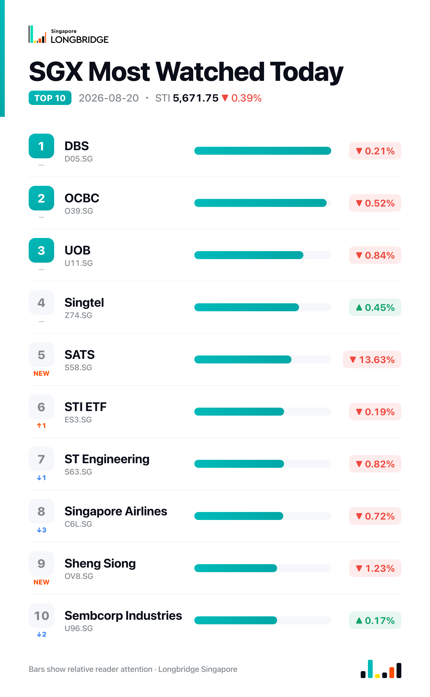

STI Falls 0.39% to 5,671.75 as Rebound Fades Into the Close; SATS Slumps 13.6% on Margin Miss
The Straits Times Index closed at 5,671.75 on Thursday, down 22.49 points, or 0.39%, after opening near 5,653.06 on a soft regional handoff, sliding to a session low of 5,645.39, and then rallying to a high of 5,687.94 — within seven points of Wednesday's close — before fading back into the close. Advancers led decliners 14 to 12 among the benchmark's 30 constituents, with four unchanged, even as the index finished lower, as one sharply negative reaction outweighed an otherwise broadly positive session for the rest of the board.
The early weakness traced to a soft regional handoff: intervention measures in the U.S. bond market left Asian markets mixed overnight into Thursday, and the STI opened down about 0.72% in sympathy. The index recovered nearly all of that opening loss by midday, but a sharp single-stock reaction in the afternoon — SATS reversing on its quarterly results — pulled the benchmark back down toward its session low into the close.
Session Movers
SATS (S58.SG, -13.63%) was by far the session's weakest performer, extending an opening slide of more than 11% after first-quarter FY2027 results released before Thursday's open showed net profit up 6% to S$75.1 million and revenue up 11.3% to S$1.68 billion, with port-services revenue climbing nearly 13% on stronger freight volumes and food-solutions revenue up 5.4%. The operating margin nonetheless slipped to 8% as Middle East-related and inflationary cost pressures weighed, prompting the sell-off. The stock trades at 2.58 times book, roughly in line with its 10-year median, with a consensus Strong Buy rating and a S$5.06 target set prior to Thursday's results implying about 23% upside.
CapitaLand Investment (9CI.SG, +1.52%) extended its advance following the Aug. 13 disclosure that first-half recurring fee revenue rose 20% year-on-year and operating PATMI increased 13%, with funds under management reaching S$128 billion; the group also flagged roughly S$7 billion to S$9 billion of existing China-based assets and the sale of India's Radial IT Park for INR 7.98 billion. DBS reiterated a Buy rating on Aug. 14 at a S$3.40 target. The stock trades at 1.05 times book — cheaper than about 28% of the past three years — with a consensus Strong Buy rating and a S$3.41 target implying roughly 28% upside.
Singtel (Z74.SG, +0.45%) added to Wednesday's gain after S&P Global raised its credit rating a notch to A+/A-1 with a stable outlook on Aug. 19, citing an expected rebound in adjusted EBITDA to S$5.5 billion-S$5.7 billion for FY2027 on subsidiary cost cuts and special dividend income. The upgrade followed an Aug. 17 launch of a second GXS Bank credit card built around Grab and Singtel spending, offering up to 10% GrabCoins cashback. Shares trade at 20.4 times earnings — cheaper than about 40% of the past five years — with a consensus Buy rating and a S$5.32 target implying about 20% upside.
Sembcorp Industries (U96.SG, +0.17%) held onto a small gain with no fresh company disclosure Thursday, continuing to digest the Aug. 17 news that its Temasek-backed Indian renewable arm, Sembcorp Green Infra, is preparing a roughly US$500 million India listing — its second attempt at going public. CGS International and DBS have both reiterated Buy ratings this month. The stock trades at 17.98 times earnings, above its own five-year range and cheaper than just 0.08% of that period, with a consensus Buy rating and a S$6.63 target implying about 10% upside.

One point worth noting
Thursday's breadth ran counter to the index: 14 of the benchmark's 30 constituents rose against 12 decliners, yet the STI still finished lower — a divergence last seen on Aug. 13. The gap traced almost entirely to SATS, whose 13.63% slide was nearly four times the size of the next-largest mover, DFI Retail's 3.45% decline, and far exceeded the day's best gainer — a reminder that one outsized earnings reaction can outweigh an otherwise constructive session for the rest of the board.
This recap is for informational purposes only and does not constitute investment advice.